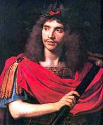

1661
• MOLI�RE
20 janvier : Ouverture de la salle du Palais-Royal avec Le D�pit amoureux.
4 f�vrier : Premi�re de Dom Garcie de Navarre.
1-17 avril : Cl�ture de P�ques. Moli�re demande deux parts au lieu d'une, que la troupe lui accorde s'il se marie. Le mariage avec Armande B�jart est-il d�j� pr�vu? 24 juin : Premi�re de L'�cole des maris au Palais-Royal.
17 ao�t : Premi�re des F�cheux � Vaux-le-Vicomte.
Octobre : Moli�re s'installe dans la maison neuve du m�decin Daquin, rue Saint-Thomas-du-Louvre, en face de son th��tre.
4 novembre : Premi�re des F�cheux au Palais-Royal. Vif succ�s : 39 repr�sentations de suite.
• VIE TH��TRALE ET LITT�RAIRE
Mort de Saint-Amant.
• POLITIQUE ET SOCI�T�
Mort de Mazarin.
D�but du pouvoir personnel de Louis XIV.
Disgr�ce et arrestation de Fouquet. Colbert entre au conseil.
• ARTS, SCIENCES ET RELIGION
D�but des travaux du ch�teau de Versailles (dirig�s par Le Vau).
Lulli devient surintendant de la musique du Roi.
